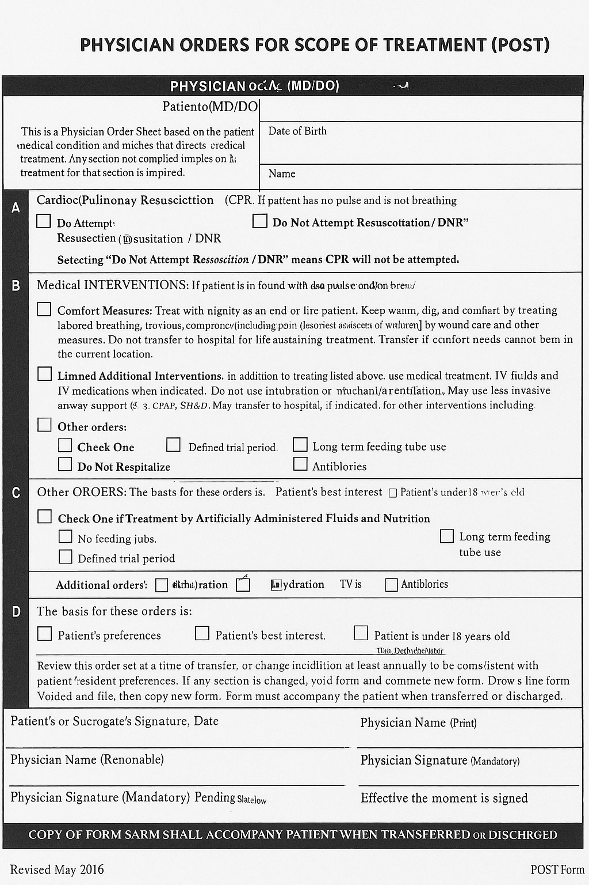
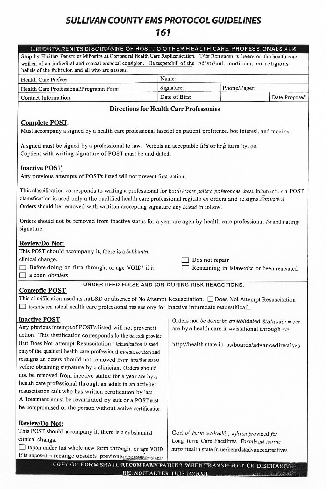

This section contains the Tennessee Physician Orders for Scope of Treatment (POST) form, which must accompany patients when applicable. This is a legal document guiding EMS personnel regarding CPR, medical interventions, antibiotics, and nutrition preferences, and must be honored in the field.
 Ensure this form is completed properly and accompanies the patient when transported or transferred. Do not alter the form.